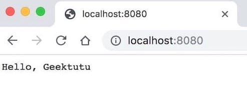

Go Gin 简明教程
Go 简明教程系列文章链接：
Go 语言简明教程
(Aug 6, 2019)
Go Gin 简明教程
(Aug 7, 2019)
Go2 新特性简明教程
(Aug 15, 2019)
Go Protobuf 简明教程
(Jan 11, 2020)
Go RPC & TLS 鉴权简明教程
(Jan 13, 2020)
Go WebAssembly (Wasm) 简明教程
(Jan 23, 2020)
Go Test 单元测试简明教程
(Feb 10, 2020)
Go Mock (gomock)简明教程
(Feb 14, 2020)
Go Mmap 文件内存映射简明教程
(Apr 20, 2020)
Go Context 并发编程简明教程
(Apr 20, 2020)
关键字：Gin教程 Gin中文文档 Go语言Web框架 Go环境搭建
Gin 简介
Gin is a HTTP web framework written in Go (Golang). It features a Martini-like API with much better performance – up to 40 times faster. If you need smashing performance, get yourself some Gin.
Gin 是使用 Go/golang 语言实现的 HTTP Web 框架。接口简洁，性能极高。截止 1.4.0 版本，包含测试代码，仅14K，其中测试代码 9K 左右，也就是说框架源码仅 5K 左右。
1 2 3 4 $ find . -name "*_test.go" | xargs cat | wc -l 8657 $ find . -name "*.go" | xargs cat | wc -l 14115
Gin 特性
快速 ：路由不使用反射，基于Radix树，内存占用少。
中间件 ：HTTP请求，可先经过一系列中间件处理，例如：Logger，Authorization，GZIP等。这个特性和 NodeJs 的 Koa 框架很像。中间件机制也极大地提高了框架的可扩展性。
异常处理 ：服务始终可用，不会宕机。Gin 可以捕获 panic，并恢复。而且有极为便利的机制处理HTTP请求过程中发生的错误。
JSON ：Gin可以解析并验证请求的JSON。这个特性对Restful API的开发尤其有用。
路由分组 ：例如将需要授权和不需要授权的API分组，不同版本的API分组。而且分组可嵌套，且性能不受影响。
渲染内置 ：原生支持JSON，XML和HTML的渲染。
安装Go & Gin
初学者建议先阅读 Go 语言简明教程 。
1 2 3 $ sudo apt-get install golang-go $ go version
Ubuntu自带版本太老了，安装新版可以使用如下命令。
1 2 3 $ sudo add-apt-repository ppa:gophers/archive $ sudo apt-get update $ sudo apt-get install golang-1.11-go
默认安装在/usr/lib/go-1.11，需要将/usr/lib/go-1.11/bin手动加入环境变量。在 .bashrc 中添加下面的配置，并 source ~/.bashrc
1 export PATH=$PATH :/usr/lib/go-1.11/bin
参考：Golang Ubuntu - Github
1 2 3 $ brew install go $ go version
在 ~/.bashrc 中添加 GOPATH 变量
1 2 export GOPATH=~/goexport PATH=$PATH :$GOPATH /bin
添加完后，source ~/.bashrc
由于网络原因，不能够直接访问 golang.org，但相关的库已经镜像到 Golang - Github
例如，直接安装 go-outline 时会报网络错误，因为golang.org/x/tools是go-outline的依赖库。
1 2 3 4 5 $ go get -u -v github.com/ramya-rao-a/go-outline github.com/ramya-rao-a/go-outline (download) Fetching https://golang.org/x/tools/go/buildutil?go-get=1 https fetch failed: Get https://golang.org/x/tools/go/buildutil?go-get=1: dial tcp 216.239.37.1:443: i/o timeout
因此，可以先从 Github 手动安装好，再安装 go-outline 和 goreturns。
1 2 3 4 git clone https://github.com/golang/tools.git $GOPATH /src/golang.org/x/tools go get -v github.com/ramya-rao-a/go-outline go get -v github.com/sqs/goreturns go get -v github.com/rogpeppe/godef
Go语言有大量的辅助工具，如果你使用VSCode，将会提示你将必要的工具，例如静态检查、自动补全等工具依次安装完毕。
1 go get -u -v github.com/gin-gonic/gin
-v：打印出被构建的代码包的名字-u：已存在相关的代码包，强行更新代码包及其依赖包
第一个Gin程序 在一个空文件夹里新建文件main.go。
1 2 3 4 5 6 7 8 9 10 11 12 13 package mainimport "github.com/gin-gonic/gin" func main () r := gin.Default() r.GET("/" , func (c *gin.Context) c.String(200 , "Hello, Geektutu" ) }) r.Run() }
首先，我们使用了gin.Default()生成了一个实例，这个实例即 WSGI 应用程序。
接下来，我们使用r.Get("/", ...)声明了一个路由，告诉 Gin 什么样的URL 能触发传入的函数，这个函数返回我们想要显示在用户浏览器中的信息。
最后用 r.Run()函数来让应用运行在本地服务器上，默认监听端口是 _8080_，可以传入参数设置端口，例如r.Run(":9999")即运行在 _9999_端口。
1 2 3 4 $ go run main.go [GIN-debug] GET / --> main.main.func1 (3 handlers) [GIN-debug] Environment variable PORT is undefined. Using port :8080 by default [GIN-debug] Listening and serving HTTP on :8080
浏览器访问 http://localhost:8080

路由(Route) 路由方法有 GET, POST, PUT, PATCH, DELETE 和 OPTIONS ，还有Any ，可匹配以上任意类型的请求。
无参数 1 2 3 4 r.GET("/" , func (c *gin.Context) c.String(http.StatusOK, "Who are you?" ) })
1 2 $ curl http://localhost:9999/ Who are you?
curl参数可参考https://man.linuxde.net/curl
解析路径参数 有时候我们需要动态的路由，如 /user/:name，通过调用不同的 url 来传入不同的 name。/user/:name/*role，* 代表可选。
1 2 3 4 5 r.GET("/user/:name" , func (c *gin.Context) name := c.Param("name" ) c.String(http.StatusOK, "Hello %s" , name) })
1 2 $ curl http://localhost:9999/user/geektutu Hello geektutu
获取Query参数 1 2 3 4 5 6 r.GET("/users" , func (c *gin.Context) name := c.Query("name" ) role := c.DefaultQuery("role" , "teacher" ) c.String(http.StatusOK, "%s is a %s" , name, role) })
1 2 $ curl "http://localhost:9999/users?name=Tom&role=student" Tom is a student
获取POST参数 1 2 3 4 5 6 7 8 9 10 r.POST("/form" , func (c *gin.Context) username := c.PostForm("username" ) password := c.DefaultPostForm("password" , "000000" ) c.JSON(http.StatusOK, gin.H{ "username" : username, "password" : password, }) })
1 2 $ curl http://localhost:9999/form -X POST -d 'username=geektutu&password=1234' {"password" :"1234" ,"username" :"geektutu" }
Query和POST混合参数 1 2 3 4 5 6 7 8 9 10 11 12 13 14 r.POST("/posts" , func (c *gin.Context) id := c.Query("id" ) page := c.DefaultQuery("page" , "0" ) username := c.PostForm("username" ) password := c.DefaultPostForm("username" , "000000" ) c.JSON(http.StatusOK, gin.H{ "id" : id, "page" : page, "username" : username, "password" : password, }) })
1 2 $ curl "http://localhost:9999/posts?id=9876&page=7" -X POST -d 'username=geektutu&password=1234' {"id" :"9876" ,"page" :"7" ,"password" :"1234" ,"username" :"geektutu" }
Map参数(字典参数) 1 2 3 4 5 6 7 8 9 r.POST("/post" , func (c *gin.Context) ids := c.QueryMap("ids" ) names := c.PostFormMap("names" ) c.JSON(http.StatusOK, gin.H{ "ids" : ids, "names" : names, }) })
1 2 $ curl -g "http://localhost:9999/post?ids[Jack]=001&ids[Tom]=002" -X POST -d 'names[a]=Sam&names[b]=David' {"ids" :{"Jack" :"001" ,"Tom" :"002" },"names" :{"a" :"Sam" ,"b" :"David" }}
重定向(Redirect) 1 2 3 4 5 6 7 8 r.GET("/redirect" , func (c *gin.Context) c.Redirect(http.StatusMovedPermanently, "/index" ) }) r.GET("/goindex" , func (c *gin.Context) c.Request.URL.Path = "/" r.HandleContext(c) })
1 2 3 4 5 6 7 8 9 10 11 $ curl -i http://localhost:9999/redirect HTTP/1.1 301 Moved Permanently Content-Type: text/html; charset=utf-8 Location: / Date: Thu, 08 Aug 2019 17:22:14 GMT Content-Length: 36 <a href="/" >Moved Permanently</a>. $ curl "http://localhost:9999/goindex" Who are you?
分组路由(Grouping Routes) 如果有一组路由，前缀都是/api/v1开头，是否每个路由都需要加上/api/v1这个前缀呢？答案是不需要，分组路由可以解决这个问题。利用分组路由还可以更好地实现权限控制，例如将需要登录鉴权的路由放到同一分组中去，简化权限控制。
1 2 3 4 5 6 7 8 9 10 11 12 13 14 15 16 17 18 defaultHandler := func (c *gin.Context) c.JSON(http.StatusOK, gin.H{ "path" : c.FullPath(), }) } v1 := r.Group("/v1" ) { v1.GET("/posts" , defaultHandler) v1.GET("/series" , defaultHandler) } v2 := r.Group("/v2" ) { v2.GET("/posts" , defaultHandler) v2.GET("/series" , defaultHandler) }
1 2 3 4 $ curl http://localhost:9999/v1/posts {"path" :"/v1/posts" } $ curl http://localhost:9999/v2/posts {"path" :"/v2/posts" }
上传文件 单个文件 1 2 3 4 5 r.POST("/upload1" , func (c *gin.Context) file, _ := c.FormFile("file" ) c.String(http.StatusOK, "%s uploaded!" , file.Filename) })
多个文件 1 2 3 4 5 6 7 8 9 10 11 r.POST("/upload2" , func (c *gin.Context) form, _ := c.MultipartForm() files := form.File["upload[]" ] for _, file := range files { log.Println(file.Filename) } c.String(http.StatusOK, "%d files uploaded!" , len (files)) })
HTML模板(Template) 1 2 3 4 5 6 7 8 9 10 11 12 13 14 15 type student struct { Name string Age int8 } r.LoadHTMLGlob("templates/*" ) stu1 := &student{Name: "Geektutu" , Age: 20 } stu2 := &student{Name: "Jack" , Age: 22 } r.GET("/arr" , func (c *gin.Context) c.HTML(http.StatusOK, "arr.tmpl" , gin.H{ "title" : "Gin" , "stuArr" : [2 ]*student{stu1, stu2}, }) })
1 2 3 4 5 6 7 8 9 <html > <body > <p > hello, {{.title}}</p > {{range $index, $ele := .stuArr }} <p > {{ $index }}: {{ $ele.Name }} is {{ $ele.Age }} years old</p > {{ end }} </body > </html >
1 2 3 4 5 6 7 8 9 $ curl http://localhost:9999/arr <html> <body> <p>hello, Gin</p> <p>0: Geektutu is 20 years old</p> <p>1: Jack is 22 years old</p> </body> </html>
中间件(Middleware) 1 2 3 4 5 6 7 8 9 10 11 12 13 14 r.Use(gin.Logger()) r.Use(gin.Recovery()) r.GET("/benchmark" , MyBenchLogger(), benchEndpoint) authorized := r.Group("/" ) authorized.Use(AuthRequired()) { authorized.POST("/login" , loginEndpoint) authorized.POST("/submit" , submitEndpoint) }
如何自定义中间件呢？
1 2 3 4 5 6 7 8 9 10 11 12 func Logger () return func (c *gin.Context) t := time.Now() c.Set("geektutu" , "1111" ) c.Next() latency := time.Since(t) log.Print(latency) } }
热加载调试 Hot Reload Python 的 Flask框架，有 debug 模式，启动时传入 debug=True 就可以热加载(Hot Reload, Live Reload)了。即更改源码，保存后，自动触发更新，浏览器上刷新即可。免去了杀进程、重新启动之苦。
Gin 原生不支持，但有很多额外的库可以支持。例如
github.com/codegangsta/gin
github.com/pilu/fresh
这次，我们采用 github.com/pilu/fresh 。
1 go get -v -u github.com/pilu/fresh
安装好后，只需要将go run main.go命令换成fresh即可。每次更改源文件，代码将自动重新编译(Auto Compile)。
参考 github.com/pilu/fresh - Github
相关链接
上一篇 « Go 语言简明教程
下一篇 » 7天用Go从零实现Web框架Gee教程